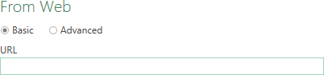
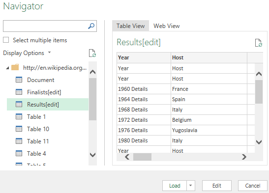
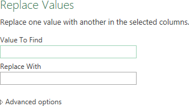

Webpages often tables in it. The Power Query in Excel can recognize these tables and
import them. In this task you are going to import some data from the UEFA European
football championship that is available in a wikipedia page.
Open a new blank workbook.
Choose tab Data > From Web (group Get & Transform Data).
A dialogbox is displayed to enter the URL of the web page.
Figure 1: From Web dialogbox

Enter URL
http://en.wikipedia.org/wiki/UEFA_European_Championship
and click OK.
A connection to the web page will be created.
When the connection is established, the Navigator pane
is displayed where you will see a list of all the tables on the web page.
Clicking on a table displays a preview of the table on the right of the
pane.
Figure 2: Navigator pane for UEFA page on Wikipedia

Select table Results[edit] and then click button
Edit.
The Query Editor is started in a new window. On the right site below
Query Settings under Applied
Steps you see the steps already applied.
Next you will clean up and shape the data to your needs. In sequence, you will
remove all columns except Year and Final
Winners.
remove the word Details in column Year.
keep only real years in column Year.
Select the columns Year and Final Winners
by clicking on the column header and holding the CTRL key. Then from the ribbon Remove Columns (group Manage Columns) > Remove Other Columns.
Select column Year and choose tab Home > Replace Values (group Transform)
The dialog box Replace Values is displayed.
Figure 3: Dialogbox Replace Values

Type Details in the textbox Value to
Find and leave the textbox Replace With empty and
click OK.
Select column Year and click on the filter drop down arrow
in the column header. Uncheck Year and click
OK.
Choose Close & Load (group Close) > Close & Load.
The data is loaded in an Excel table in a new sheet. You can work with the data and save the the
Excel map for later use.
Note: It is always possible to change the query afterwards. For this
select a cell in the table and choose tab Query > Edit (group Edit). From here you can also refresh your data, all steps will
then repeated.